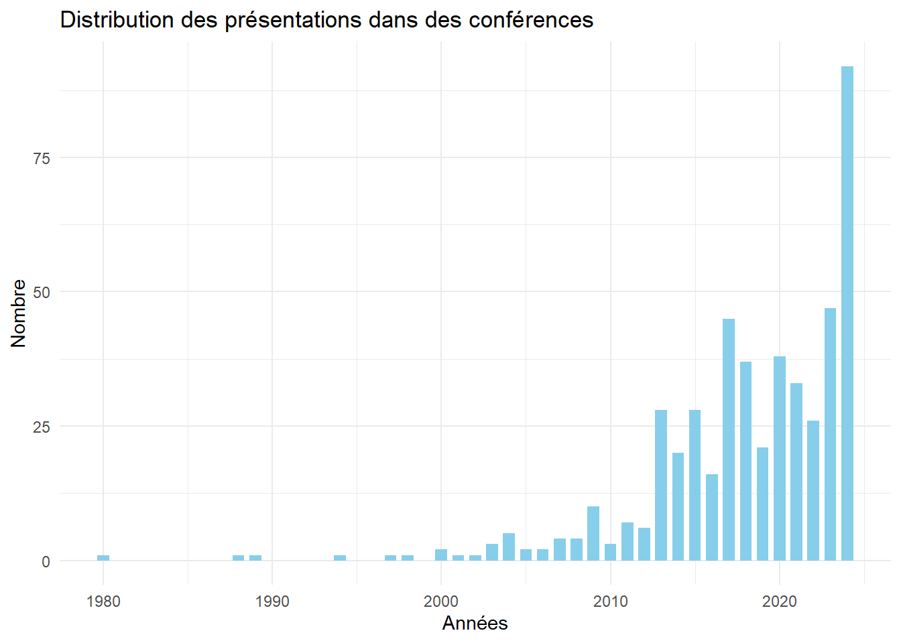
Presque 50 ans de recherche universitaire du jeu de rôle sur table
Évolution historique et analyse bibliométrique
Pascal Martinolli ![]()
Résumé
Cette étude propose une analyse historique et bibliométrique approfondie de la recherche universitaire sur le jeu de rôle sur table. Elle examine l’évolution des publications à travers différents formats académiques (conférences, monographies, thèses, articles évalués par les pairs) et explore les nouvelles tendances de diffusion scientifique, incluant les prépublications et les revues de littérature. L’analyse révèle une croissance marquée de la production scientifique depuis les origines du jeu de rôle, avec une accélération notable durant la dernière décennie. Si la recherche reste principalement ancrée en Amérique du Nord et en Europe, de nouveaux pôles émergent en Amérique latine et en Asie. Plusieurs thématiques majeures sont explorées : la prépondérance de Dungeons & Dragons, les controverses morales des années 1980-1990, les applications thérapeutiques, les enjeux de diversité et de représentation, ainsi que le phénomène des actual plays. L’étude s’enrichit également d’une analyse des réflexions théoriques développées par la communauté des joueurs en dehors du cadre universitaire traditionnel. Elle examine comment ces contributions para-académiques de qualité peuvent être intégrées et validées par les institutions savantes. Enfin, elle met en lumière l’influence des pratiques académiques, notamment en matière de citation, sur la culture du jeu de rôle.
Mots clés
Jeu de rôle sur table ; publication universitaire ; analyse historique ; analyse bibliométrique ; conversation scientifique
1 Introduction
Depuis 2014, j’ai entrepris de rassembler des références universitaires se rapportant à l’étude du jeu de rôle sur table. Cette démarche a abouti à la création d’une base de données librement accessible via Zotero, comprenant un total de 3000 références issues d’études universitaires ou para-universitaires.
1.1 Quelques points saillants
Parmi les références indexées, on dénombre 571 articles soumis à une évaluation par des pairs, 180 monographies, 406 mémoires ou thèses, et bien d’autres types de documents : présentations de conférence, billets de blogue, jeux de données, etc.
Le corpus de base a été constitué de références issues de recherches bibliographiques dans des bases de données bibliographiques universitaires, de catalogues de bibliothèques, d’index de citations, de dépôts institutionnels et autres. Les références correspondaient à une ou plusieurs équations de recherche selon des termes libres ou contrôlés1. Après la constitution de ce corpus de base, des alertes ont été programmées dans les outils qui le permettaient pour repérer automatiquement les nouvelles références correspondantes aux critères de recherche2.
Les références sont collectionnées avec le logiciel bibliographique Zotero dans une bibliothèque de groupe partagée et ouverte à tous3. Les références sont corrigées et indexées avec des termes issus d’un thésaurus documentaire de mots-clés contrôlés en deux niveaux4.
Je remercie Michael Freudenthal qui m’a rejoint en 2019 pour gérer cette base de données en ligne. Je remercie aussi Thomas Munier et Sébastien Delphino qui m’ont aidé à concevoir le thésaurus en 2018.
1.2 Biais
Cette collection de références bibliographiques souffre de plusieurs biais. Les principaux biais sont les biais linguistiques et géographiques car l’essentiel des références actuelles sont en anglais et en français. Bien que de la littérature hispanophone, lusophone, italienne et autres soient en train d’émerger, il y a encore des angles morts non couverts ou peu couverts (langues nordiques, allemandes et chinoises par exemple).
Il y a aussi des biais de disponibilité : des thèses et mémoires soutenues avant les années 2000 sont en général peu indexé dans des bases de données par exemple.
Il y a enfin des biais d’indexation. Par exemple, certaines références indexent la monographie seulement et d’autres références indexent à la fois la monographie et les chapitres de celle-ci.
Le type de document pour lequel j’estime qu’il y a le moins de biais est l’article de revue savante dont la publication a été précédée par une révision par les pairs (peer-reviewed) arbitrée par un éditeur (editor). En effet, ce type de littérature bénéficie d’une indexation plus systématique dans des bases de données disciplinaires. Donc, des recherches exhaustives dans un grand nombre et une grande diversité de bases de données bibliographiques permet de justifier que l’ensemble des articles qui y ont été repérés constitue un corpus représentatif de toute la production scientifique. Comme ce corpus est représentatif, il est raisonnable de généraliser les analyses qui en sont faites.
2 Présentations dans des conférences
Malgré l’existence de biais de disponibilité (toutes les conférences ne se trouvent pas indexées en ligne) et de sélection (je suis très loin d’avoir indexé toutes les conférences sur le jeu de rôle qui se sont données), la figure ci-dessous illustre une forte augmentation du nombre de présentations de conférences à partir des années 2000 avec une accélération autour de 2013-2015. Avant 2000, les présentations de conférence sont extrêmement sporadiques et rares.
Outre l’organisation de colloques complets avec une série de conférences dans un cadre universitaire, on assiste aussi à un engouement pour les présentations ponctuelles dans des événements comme des conventions ou des expositions.
3 Livres et chapitres de livre
Comme mentionné précédemment, les références de monographies (livres) souffrent d’une indexation inégale de leurs chapitres. En effet, certains livres n’ont qu’une seule référence pour l’ouvrage et d’autres livres bénéficient d’une référence générale et d’une référence pour chacun des chapitres.
Malgré cela, on remarque là aussi une augmentation nette du nombre de monographies avec un angle universitaire sur le jeu de rôle sur table dès les années 2000.

Parmi les principales maisons d’édition, on remarque des acteurs traditionnels de la publication scientifique (Springer, Routledge, Wiley, MIT Press, Peter Lang, etc.), ainsiq que des maisons d’édition spécialisées dans les études du jeu (McFarland, ETC Press, Pinkerton Press, etc.) et des organisations professionnelles ou semi-professionnelles de jeu (Ropecon ry, Evil Hat Production, Knutepunkt, etc.).
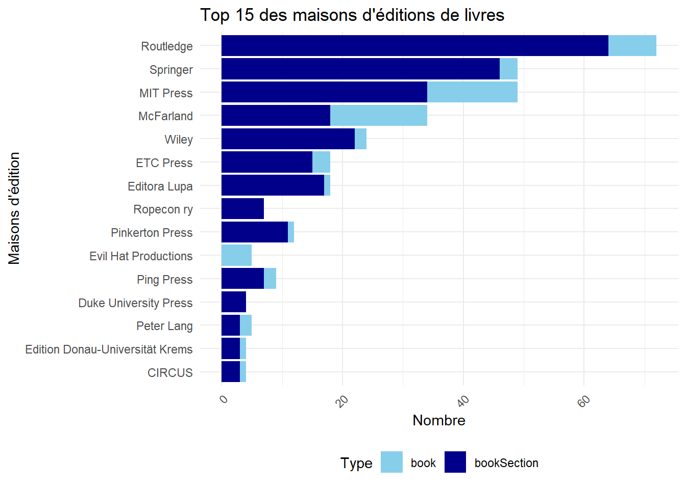
4 Mémoires et thèses
La représentativité des mémoires et thèses souffrent de nombreux biais.
Tout d’abord, les mémoires, des travaux universitaires de second cycle sont très difficiles à repérer en ligne. Pour des raisons légales (peu d’obligation de diffusion) et techniques (peu de diffusion électronique), les mémoires soutenus et acceptés sont très rarement visibles en ligne. Parfois, c’est une institution qui a une politique de diffusion qui facilite cet accès. Parfois, c’est l’étudiant qui diffuse le travail sur son site web ou qui le dépose dans des plateformes de manière individuelle et volontaire. Il en va de même pour les travaux de premier cycle, encore moins diffusés.
Pour les thèses de doctorat, le repérage est plus facile. En effet, dans la plupart des pays, une thèse de doctorat a une dimesion publique, donc l’institution où la thèse est soutenue a une obligation a minima de diffuser une référence bibliographique et de conserver une copie (au moins imprimée) de la thèse soutenue et acceptée. Parfois, la référence bibliographique peut être repérée dans le dépôt institutionnel de l’institution, parfois dans le dépôt légal du pays, parfois dans des bases de données spécialisées. Malgré cela, il y a une sur-représentation des thèses diffusées en ligne au détriment de thèses qui n’existent qu’au format imprimé.
Avec ces biais en tête, on peut remarquer qu’il y a de plus en plus de mémoires et de thèses sur le jeu de rôle sur table à partir des années 2005-2010. Il y a une forte augmentation depuis 2013 qui pourrait correspondre au moment où les universités nord-américaines et européennes ont diffusé de plus en plus systématiquement les mémoires et thèses de leurs étudiant.es.
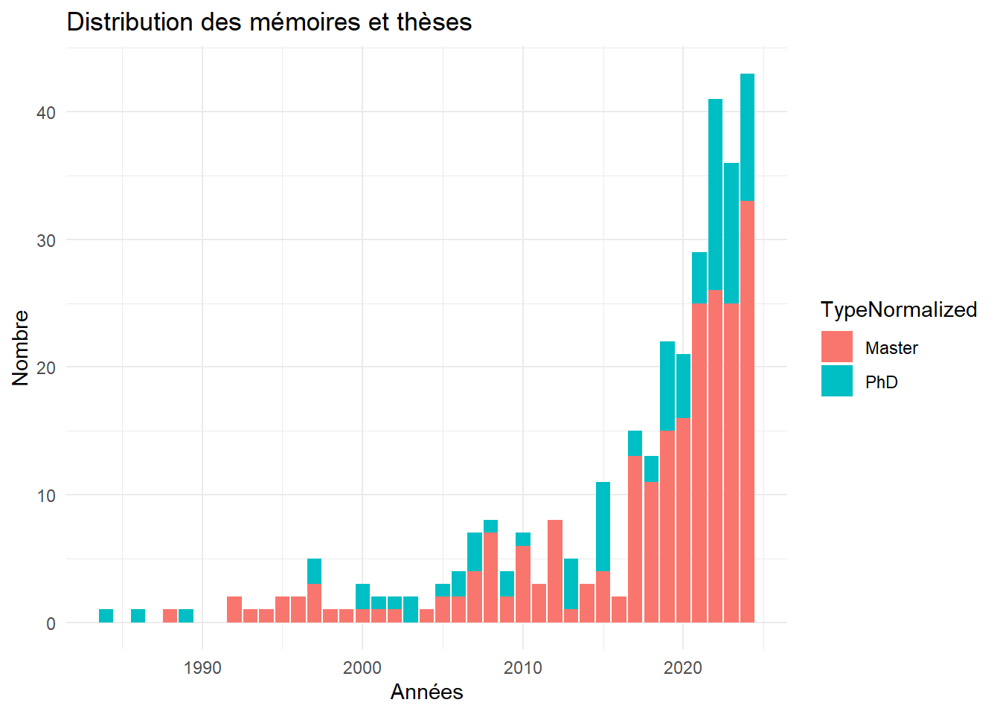
De manière intéressante, on peut remarquer deux tendances pour le nombre de pages demandé aux étudiant.es. Quelles que soient les institutions, la répartition du nombre de pages pour les mémoires de maîtrise se situe autour de 100 pages en moyenne. À l’inverse, le nombre de pages pour une thèse de doctorat varie considérablement d’une institution à l’autre. En effet, cela va d’une centaine de pages à plus de 300 ou 500 pages, avec une moyenne de 240 pages environ.
Les pays de soutenance les plus représentés5 sont ceux d’Amérique du Nord avec un poid énorme pour les États-Unis et moindre pour le Canada. Enuite, viennent les pays d’Europe avec une avance de la France suivie des pays d’Europe du nord. Des pays émergents sont à noter (Brésil, Afrique du sud, Pérou, Chine, etc.).
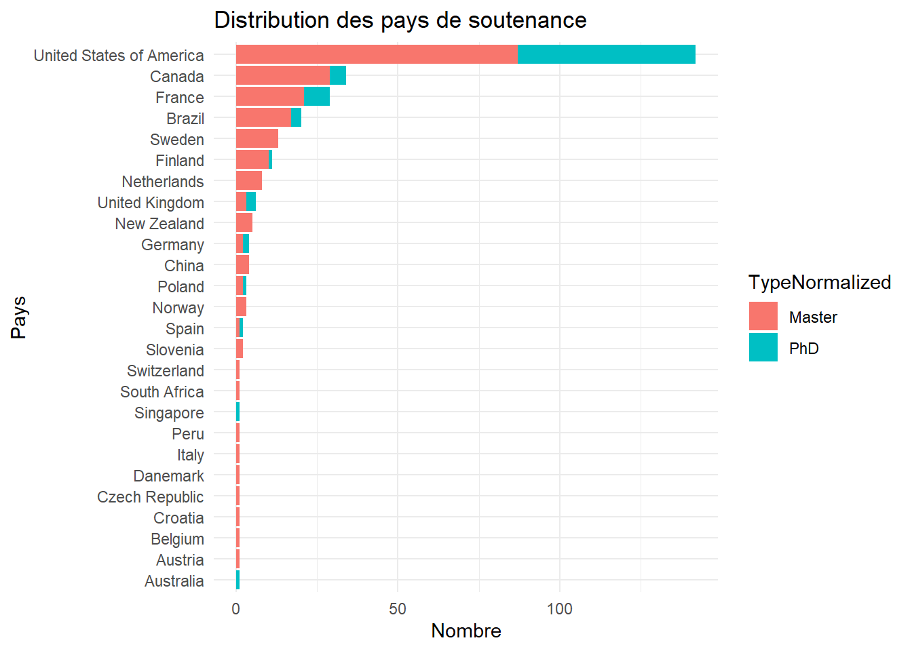
5 Articles de revues universitaires
Comme mentionné précédemment, je pense avoir collecté un ensemble représentatif des articles de revues savantes dont le contenu a été révisé par des pairs et dont le processus de sélection et de publication a été arbitré par un éditeur.
5.1 Critères d’inclusion
Le cœur du sujet ou une partie significative du sujet des articles doit parler du jeu de rôle sur table. Les articles sur les jeux de rôle en grandeur nature ne sont pas inclus a priori (ils sont inclus s’ils parlent aussi de jeu de rôle sur table). Les articles traitant de jeu de rôle électronique ne sont pas inclus à moins que le processus de conversation central soit une intéraction humaine (ainsi les jeux de rôle en table virtuelle ou en actual play sont inclus). Les jeux de rôle thérapeutiques ou sociodrames sont inclus si la dimension ludique est au moins partiellement présente. Ainsi, les intéractions courtes et individuelles entre un thérapeute et un patient ne sont pas incluses.
En observant la figure ci-dessous, on remarque que la production est très sporadique dans les années 1980. Dans les années 1990, il y a une production modeste, ne dépassant jamais 10 articles par an. À partir des années 2010, on remarque une augmentation forte et constante du nombre de publication, culminant à 60 voire 80 articles par an dans les années 2020.
5.2 Explications
Plusieurs raisons peuvent être avancées pour expliquer cette augmentation. Tout d’abord, la publication scientifique en général, toutes disciplines universitaires confondues, a fortement augmenté durant la même période. En effet, la pression à la publication (le fameux « publish or perish ») incite les chercheurs à publier quantitativement plus qu’auparavant.
De plus, il est possible qu’un effet générationnel soit en jeu d’une manière double. Premièrement, les chercheurs ou les cadres de la recherche (directeurs de laboratoire, chef de projets de recherche, éditeurs de revues, membre de comités de financements, etc.) ont joué dans leur jeunesse et ils apprécient positivement toute recherche mettant en valeur un passe-temps pour lesquel ils ont un attachement. Deuxièment, une nouvelle mode de la pratique du jeu de rôle sur table est apparue après les années 2010. En effet, de nombreux rôlistes sont devenus parents et ils ont initié leurs enfants ou bien ils ont reconnecté avec la pratique du jeu eux-même. De nouveaux joueurs ont découvert ce passe-temps à travers des fictions de la culture populaire (Stranger Things, Big Bang Theory, etc.) ou à travers de parties enregistrées et diffusées en ligne (actual play).
Enfin, des angles de recherche intéressants ont suscité un fort engouement et de nombreuses recherches : utilisation du jeu de rôle ludique comme outil psychothérapeutique ou comme outil pédagogique, etc.
5.3 Nombre d’auteurs par articles
En observant la figure suivante, on observe que l’auteur typique d’un article sur le jeu de rôle est un auteur unique. Le nombre d’auteurs dépasse rarement le nombre de quatre. Cependant, depuis les années 2010, on remarque de plus en plus de grosses équipes de chercheurs (de 4 à 15) autour d’un projet de recherche, dans le domaine de la psychologie principalement.
5.4 Genre des prénoms des autrices et des auteurs
En attribuant automatiquement un genre aux prénoms des auteurs6 , il est possible de remarquer que les chercheuses sont de plus en plus présentes et leur nombre approche de la parité.
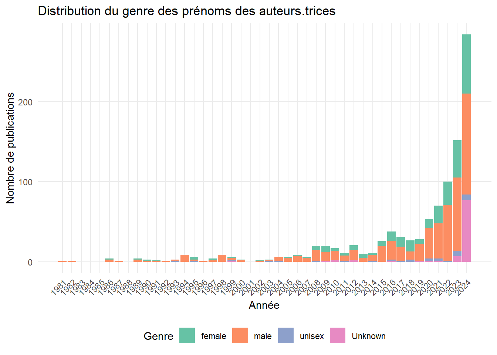
5.5 Revues
Parmi les revues savantes par lesquelles les articles sont publiées, nous remarquons que les quatre premières sont quatre revues spécialisées sur le sujet : Analog Game Studies, The International Journal of Role-Playing, The Japanese Journal of Analog Role-Playing Game Studies et Journal of Roleplaying Studies and STEAM. Suivent ensuite des revues savantes dans le domaine des études du jeu en général et en psychologie.
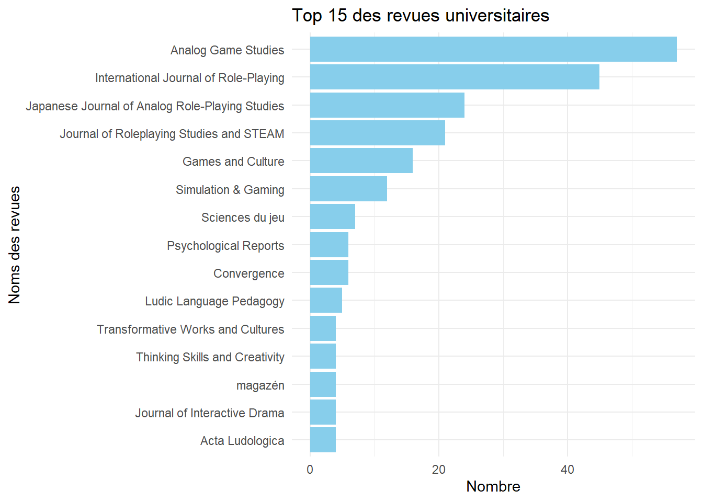
Bien que la recherche soit internationale et que la nationalité des éditeurs soit importantes, on remarque que la plupart des revues ont leur siège aux États-Unis. D’autres pays se démarquent en raison d’une revue spécialisée (Pays-Bas pour IJRP, Japon pour JJARPG, Mexique pour JRSSTEAM).
5.5.1 Ancienneté des revues
En soustrayant la date de création de la revue avec la date de publication de l’article dans cette revue, on remarque que la plupart des articles sont publiés dans les revues jeunes de moins de quinze ans. Cela est principalement dû au fait que les quatre revues spécialisées sont jeunes. On observe ensuite une phénomène de longue traine qui illustre le fait que des articles sur le jeu de rôle peuvent être publiés par des revues plus anciennes, voire très anciennes (166 ans pour le plus grand écart).

5.6 Langues des articles
La langue principale et largement majoritaire de la recherche sur le jeu de rôle est l’anglais. D’une part, l’anglais est devenue la lingua franca de la science ce qui peut expliquer pourquoi des chercheurs de langues minoritaires peuvent utiliser l’anglais pour être lu le plus largement possible. D’autre part, l’anglais est la langue de la plupart des jeux de rôle sur table.
Warning: le package 'treemapify' a été compilé avec la version R 4.3.35.6.1 Francophonie
Ce qui est plus surprenant est de remarquer que la seconde langue de la recherche sur le jeu de rôle est le français. Cela peut s’expliquer d’une part par le dynamisme des chercheurs de la francophonie, par le succès du jeu de rôle en français depuis les années 1980 avec une production et un nombre de joueurs soutenus dans cette langue. Enfin, il est possible que le nombre de revues scientifiques francophones offrent des opportunités de publications plus facilitées que pour des langues possédant moins de publications scientifiques.
Cela est confirmé lorsqu’on extrait les auteurs des articles et que l’on dénombre leurs publications, il est intéressant de noter une présence remarquable des chercheuses et des chercheurs francophones (9 sur 30).
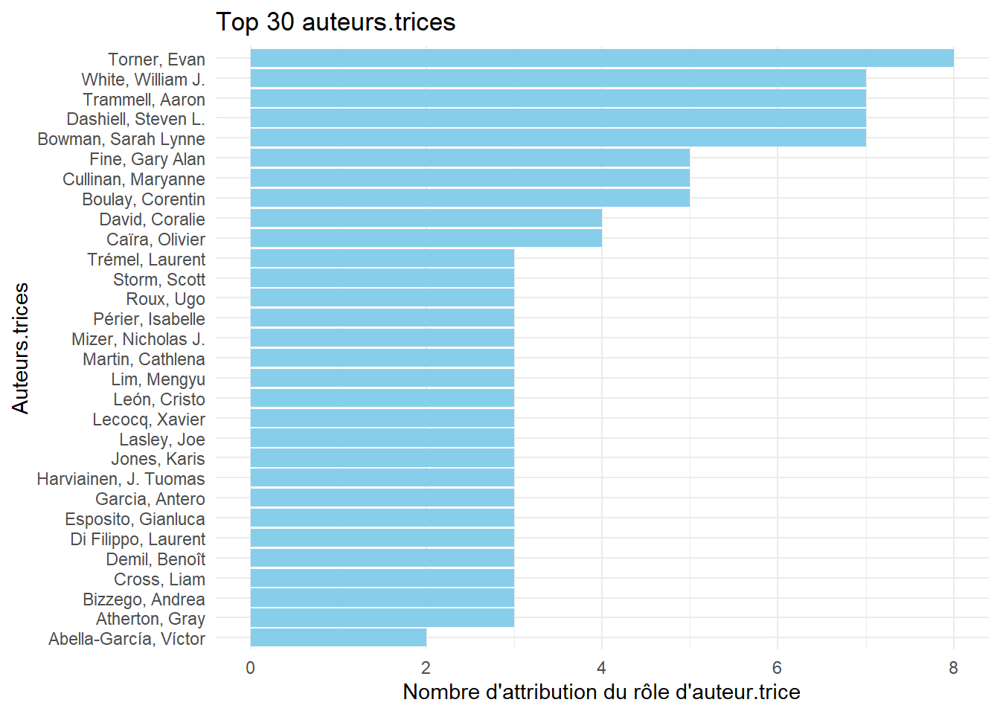
5.6.2 Autres langues
Il est intéressant de remarquer deux langues émergentes : l’espagnol et le portugais. Cela révèle une recherche de plus en plus dynamique en Amérique du sud.
Le japonais, l’allemand et le russe ont aussi été relevé. Comme mentionné au début de cette étude, j’admets un biais linguistique qui invisibilise probablement quelques articles savants que je n’ai pas identifié.
5.7 Sujets de recherche
Chaque référence ajoutée au corpus bibliographique bénéficie d’un double traitement : une validation et un enrichissement des métadonnées présentes (titres, auteurs, résumés, etc.) mais surtout une indexation des sujets du document à l’aide d’un thésaurus. Ce thésaurus est une liste contrôlée de mots-clés7 . Il est organisé en deux niveaux : un niveau générique qui correspond à une discipline ou un concept large; et un niveau spécifique qui correspond à un sous-sujet, une spécialité ou un angle.
Si une référence est indexée avec un mot-clé spécifique et si ce mot-clé est rattaché à un mot-clé générique dans le thésaurus, alors ce mot-clé générique est aussi ajouté à la référence. Une référence peut recevoir plusieurs mots-clés. Le traitement des articles révisés par les pairs bénéficie d’une attention un peu plus soutenue que les autres types de références. Dans Zotero, le type de document « Article de revue » ne suffit pas car certaines références de ce type ne sont pas révisées par les pairs donc un mot-clé «_peer reviewed » (révisé par les pairs) a été créé.
5.7.1 Niveau générique
Avec la distribution des mots-clés génériques selon les années, on remarque la stabilité ou la croissance progressive de plusieurs disciplines dans le temps : psychologie, sociologie, éducation, histoire, etc.
On retrouve ces quatre catégories en tête du dénombrement général des disciplines. Suivent ensuite un ensemble de catégories liées à la communication et au jeu (émotion, larp, média, gameplay, design).
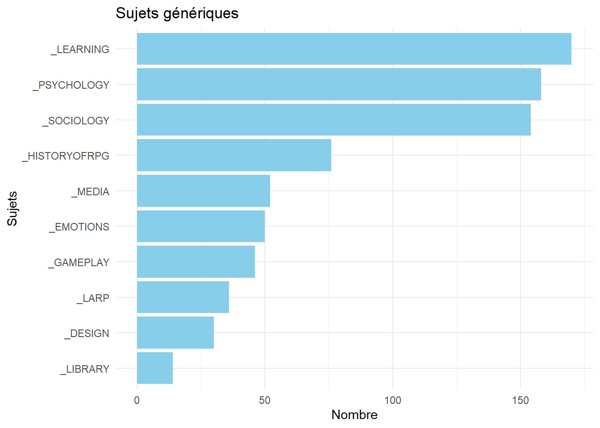
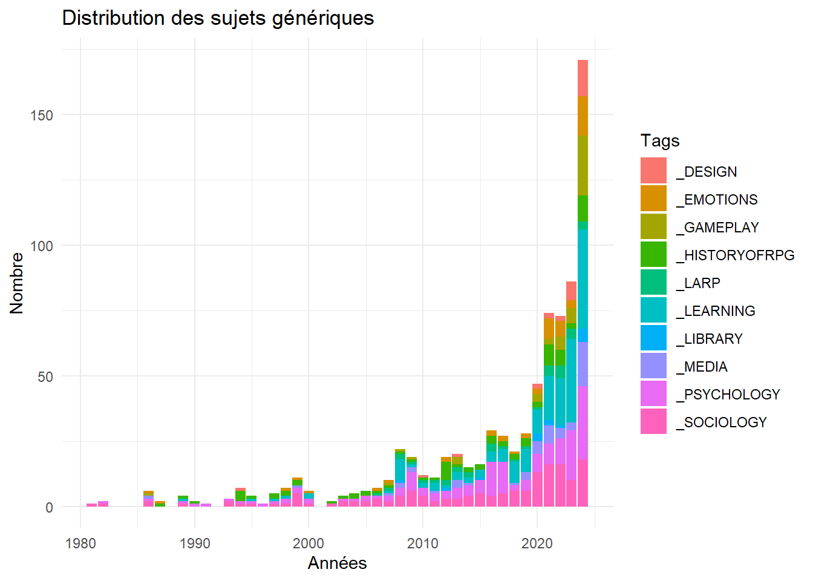
5.7.2 Niveaux spécifiques
Il existe des ensembles de quelques articles dans plusieurs disciplines très atypiques pour le jeu de rôle sur table comme la musique, la neuroscience, le droit ou la philosophie. On peut les repérer dans les niveaux spécifiques.
Outre palier au défaut des choix ontologiques du thésaurus, le niveau spécifique permet aussi de repérer plus finement des disciplines et des sujets. Pour les disciplines, ce niveau spécifique permet de repérer qu’outre les grandes disciplines des sciences humaines et sociales, il existe des intérêts de niche dans les domaines du droit, de la musique, de la philosophie ou des neurosciences.
Pour les sujets de recherche, plusieurs sélections ci-dessous montrent que certains sujets sont associés à des moments particuliers (les paniques morales par exemple), ou bien font l’objet d’un intérêt récent plutôt (la psychothérapie par exemple).
5.7.2.1 Jeux cités
Ce niveau permet aussi de repérer les jeux mentionnés dans les études. On remarque par exemple que Dungeons & Dragons est le jeu le plus cité, de très loin (plus de 200 études). Les autres jeux sont loin derrières avec les jeux du Monde des Ténèbres (15 études), Call of Cthulhu (8) et d’autres.
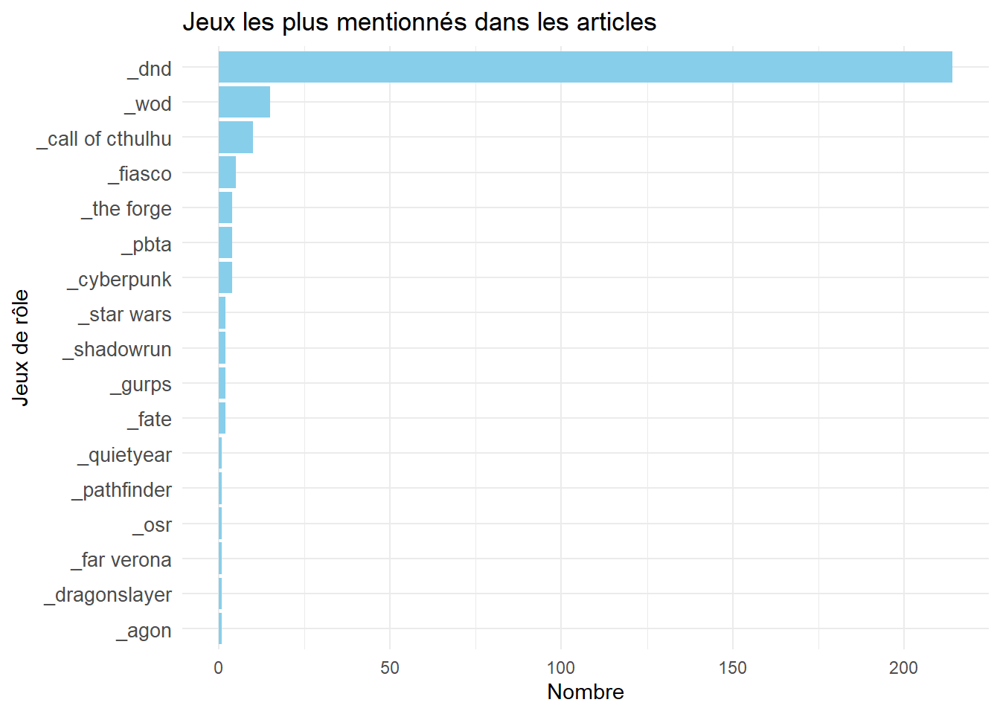
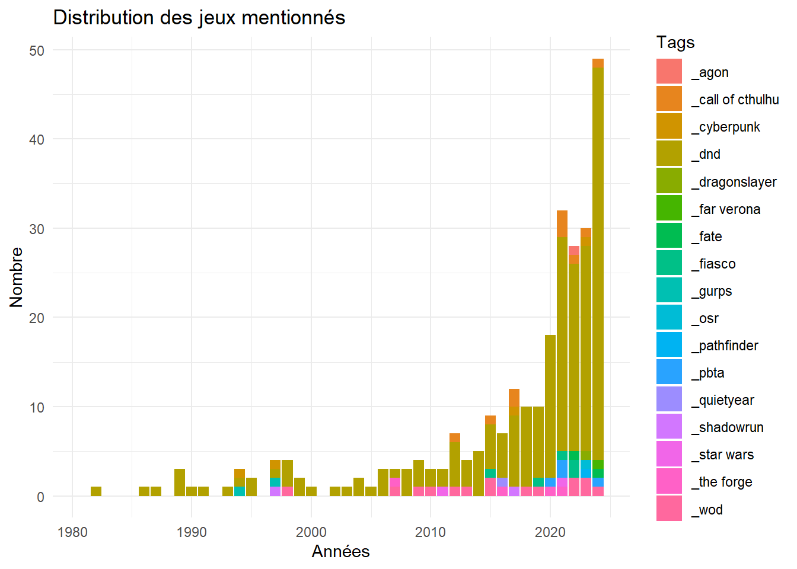
5.7.2.2 Psychothérapies
5.7.2.3 Paniques morales
Les premières publications scientifiques visaient à expliquer la montée en popularité de ce hobby et à répondre aux paniques morales des année 1980-1990 aux États-Unis. On ne le voit pas sur le graphique suivant mais les articles les plus anciens sont des articles de debunking de psychologie pour expliquer que le loisir du jeu de rôle n’est pas négatif pour la santé mentale. Tandis que les articles les plus récents sont des articles d’histoire ou de sociologie expliquant le phénomène des paniques morales autour du jeu de rôle.
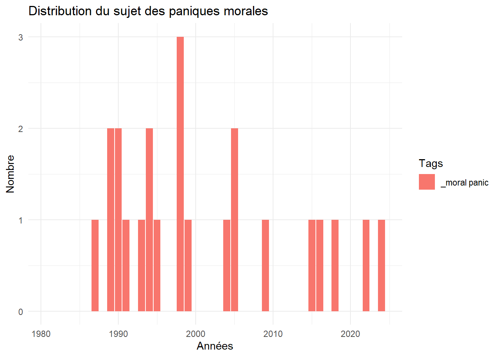
5.7.2.4 Quelques sujets en éducation
Plusieurs sujets de recherche en éducation suscite un intérêt particulier : l’aspect motivationnel de la pratique du jeu sur l’apprenant, la possibilité d’une émotion de auto-efficacité (l’impression positive que l’on est en train d’accomplir une tâche de la bonne manière), l’apprentissage d’une langue seconde ou la pratique de compétences sociales de communication, de négociation ou d’animation.
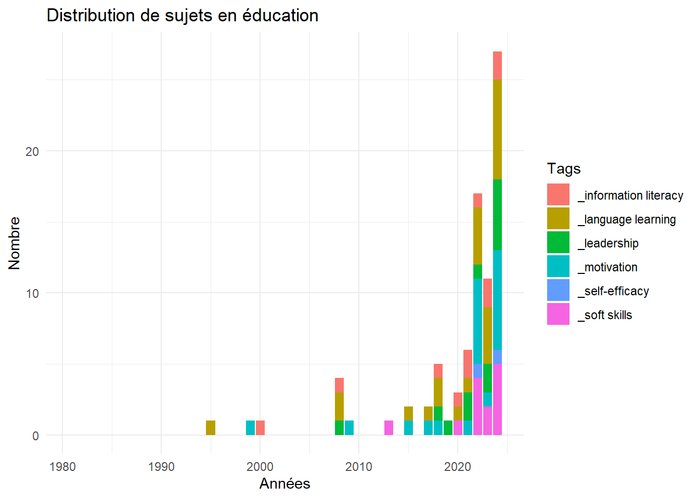
5.7.2.5 Genre, minorité, inclusion
Ces dix dernières années, on peut remarquer un fort intérêt pour la recherche sur les genres et les minorités, avec un accent sur l’aspect d’inclusion (hospitalité, appartenance, etc.) ou d’exclusion (racisme, jugement, etc.).
5.7.2.6 Quelques sujets autour de l’immersion
Enfin, une sélection de sujets autour de l’immersion en cours de jeu montrent là aussi des intérêts de recherche pour l’évasion (escapism), la distantiation ou l’osmose émotionnelle (bleed) et la personnification (embodiment) de l’expérience de jeu.
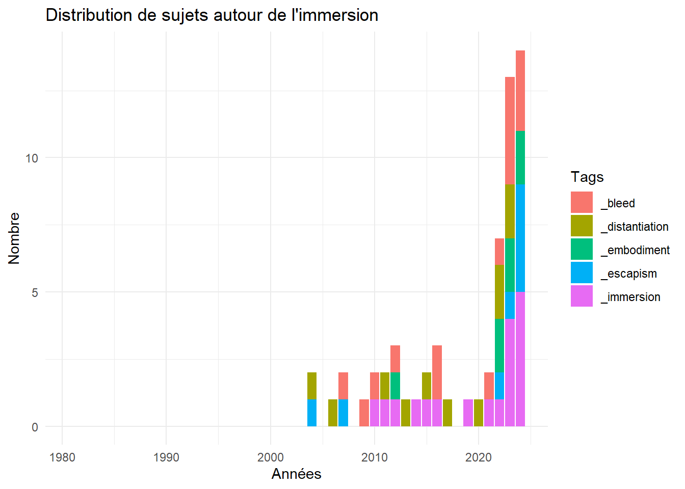
5.8 Tendances de publication récentes
5.8.1 Reproductibilité
Depuis les années 2020, on peut remarquer quelques chercheurs qui diffusent leurs résultats préliminaires dans des dépôts de prépublications (arXiv, PsyArXiv, OSF, etc). De plus, ils diffusent aussi leurs jeux de données, leurs méthodes, leurs codes source (GitHub, Kaggle, OSF, Zenodo, etc.). Ces moyens de diffusion sont principalements utilisés dans le domaine de la psychologie et de la sociologie et de l’ingénierie logicielle. Pour les chercheurs qui choisissent ces médias, il s’agit souvent de rendre les résultats de recherche plus robustes et reproductibles, de susciter des collaborations ou des révisions supplémentaires, ou de signaler l’objet de leur recherche.
5.8.2 Revues de littérature
Récemment, plusieurs études sont des synthèses d’autres études. Ce phénomène de publication peut être considéré comme un signe de maturité du champ de recherche des jeux de rôle. Ces synthèses suivent des méthodes plus ou moins exigeantes selon les objectifs, les études et les moyens utilisés. Le terme classique de « revue de littérature » décrit une étude peu structurée sur un objet de recherche générique pour faire le point sur ce qui a été fait dans un domaine. J’en ai repéré deux en psychologie, trois en éducation et une en sociologie. Ensuite, j’ai repéré des synthèses plus structurées comme une étude rapide (rapid review)8 en psychologie et deux études de la portée (scoping review) en psychologie9.
Enfin, il existe des synthèses très structurées et ambitieuses (certaines disent même « prestigieuses») qui se nomment les revues systématiques ou les méta-analyses. J’ai repéré un article en éducation qui se définit comme une revue systématique mais qui est une simple revue de littérature.
Il existe une méta-analyse intéressante qui discute du jeu de rôle en éducation de manière large (c’est-à-dire « de jeu de rôle mais pas sur table »). Je l’ai conservé car je trouvais qu’une de ses conclusions était intéressante, à savoir que « le jeu de rôle était de loin le meilleur type d’activité d’apprentissage pour promouvoir la pensée critique. »10
5.8.3 Identifiants de chercheurs
Les chercheuses et les chercheurs utilisent de plus en plus des identifiants pérennes, que ce soit de manière autonome et volontaire (ORCID), collaborative (Wikidata) ou par des institutions de catalogage (VIAF). Avec une tentative de reconciliation superficielle11, j’ai remarqué que sur les 643 chercheurs : 285 possédaient possiblement un identifiant ORCID, 153 possédaient possiblement un identifiant Wikidata et 248 possédaient possiblement un identifiant VIAF.
5.8.4 Graphe de citations
Les articles et les bibliographies de ces articles sur le jeu de rôles sont peu indexés dans les graphes de citation ou alors ils sont indexés très inégalement12. Cela nous permet de voir d’autres articles influents sur lesquels la recherche s’est appuyé. Pour que cela soit possible avec cet outil (ainsi que la plupart d’entre eux), il faut que l’article ait un identifiant pérenne nommé DOI, que la revue qui a utilisé ce DOI ait saisi les métadonnées de description de l’article associé et aussi qu’elle ait saisi tous les DOI des articles cités en bibliographie de l’article. Cette dernière saisie est beaucoup moins systématique que la saisie des métadonnées de description.
Pour tenter de valoriser les citations des articles de jeux de rôles entre eux, j’ai tenté de reproduire le graphe en versant des données dans Wikidata et en les visualisant de diverses manières13. Bien évidement, cette preuve de concept n’était qu’exploratoire et partielle.
5.8.5 Maisons d’édition douteuses
Le phénomène de « Publish or perish » a aussi été associé à l’apparition depuis les années 2010 à un ensemble varié et gradué de maisons d’édition douteuses. Certains utilisent le terme « prédateur ».
En me basant sur des listes d’exclusion ou d’avertissement créées par des chercheurs ou des anonymes, j’ai remarqué qu’une poignée de chapitres ont été publiés dans des livres issus de maisons d’édition aux pratiques éditoriales douteuses. De même, en suivant ces listes, une dizaine d’articles auraient été publiés en prétendant une révision par les pairs mais sans une réelle révision par les pairs avec une sélection et un arbitrage juste d’un éditeur. Cela illustre le fait que le sujet de niche du jeu de rôle sur table n’est pas à l’abri de ces comportements préjudiciables qui sont présents dans d’autres disciplines.
5.8.6 Rétractions
En 2024, je n’ai pas repéré de rétraction, c’est-à-dire d’articles retirés14. En règle générale, un article est retiré pour faute ou erreur scientifique grave : modification des données de recherche, erreur dans l’expérimentation ou l’analyse, plagiat, double soumission, etc.
Cependant, il est possible qu’une première rétraction survienne prochainement dans un cas que j’ai signalé aux auteurs originaux. En effet, la copie exacte d’un article a été publiée avec d’autres auteurs dans une revue récente.
6 Discours para-universitaire
6.1 Hors des circuits savants traditionnels
Cette étude exploratoire s’est concentrée sur la conversation scientifique au sein de ses canaux de diffusion traditionnels : articles revus par des pairs, mémoires, thèses, monographies, présentations en colloques, etc. Pourtant, la réflexion autour du jeu de rôle sur table a toujours été une composante essentielle de ce loisir, bien que celle-ci se déroule principalement en dehors des canaux de diffusion classiques de la recherche universitaire15.
Ainsi, des typologies et théories ont rapidement émergé dans des articles publiés dans des périodiques spécialisés sur le jeu de rôle, tels que les fanzines et magazines. Par exemple, dans le premier numéro de Alarums & Excursions en 1975, un article de Lee Gold, fondatrice et rédactrice en chef, présente une analyse de Dungeons & Dragons en le qualifiant de jeu un jeu à somme non nulle, contrairement à Dungeons & Beaver, un pastiche, qu’elle considère comme un jeu à somme nulle16. De même, en 1979 plusieurs concepteurs de jeu expliquent quels sont leurs rapports personnels avec le jeu de rôle dans le premier numéro de Different Worlds17. D’autres articles d’analyse seront diffusés dans ce magazine. Ainsi, bien avant 1981—année où le premier article sur le jeu de rôle, révisé par les pairs, est publié dans la revue universitaire Simulation & Gaming par le sociologue Gary Alan Fine18—la réflexion sur le jeu de rôle sur table se diffusait déjà largement dans les médias de la communauté des joueurs.
Dans les années 1990, cette réflexion s’intensifie avec l’arrivée d’internet et des plateformes en ligne : lettres de diffusion, forums, blogues, wiki, podcasts, chaînes vidéos de streaming, etc. En 1994 et 1995, notons la publication brève en quatre numéros d’un périodique hybride de réflexions de fond sur le jeu de rôle : Interactive Fantasy: The Journal of Role-Playing and Story-Making Systems19.
Enfin, vers les années 2000, notons la constitution progressive et durable de bases de données indexant des références de jeux de rôles (The Acaeum20 par exemple) et parfois avec des ontologies complexes qui n’ont rien à envier aux outils de gestion de bibliothèques universitaires (Le Grog21 et RPGGeek22 par exemple).
6.2 Validation institutionnelle
Parfois, des travaux savants publiés pour la communauté des joueurs se sont retrouvés récupérés par des maisons d’édition universtaires prestigieuses. Par exemple, la monographie Playing at the World de Jon Peterson, d’abord publiée de manière indépendante23, ou bien la somme Monsters, Aliens, and Holes in the Ground de Stu Horvath, publiée épisodiquement sous la forme d’articles de blogue24 ont été transformé dans une édition comme un livre universitaire par The MIT Press25.
De nombreux chercheurs sont affiliés à des départements universitaires en lien avec les études sur le jeu (game studies) ou les études sur le cinéma et les médias. Les conférences, colloques ou journées d’études organisées par ces chercheurs bénéficient souvent de financements institutionnels des universités d’affiliation.
Des discussions théoriques, comme la théorie GNS qui ont débuté sur le forum The Forge26 sont reprises et commentées dans la publication scientifique27.
Des fonds de collections spéciales contenant un gros volume de jeux de rôle sur table sont gérés par des institutions universitaires. Il y a par exemple la Edwin and Terry Murray collection of role-playing games28 à Duke University aux États-Unis et le Fonds patrimonial du jeu de société à l’Université Sorbonne Paris Nord en France29.
À ma connaissance, il n’y a pas de chaire de recherche spécifiquement dédiée au jeu de rôle sur table. De même, je pense pas qu’il existe pour le moment un poste de professeur titulaire avec une spécialisation ou un intérêt de recherche primaire sur le jeu de rôle sur table.
6.3 Réflexions de haut-niveau des pratiquants
Sans doute en raison de la sociologie des joueurs de jeu de rôle sur table, de leurs habitus, de leurs goûts pour l’intellectualisation, l’érudition, la théorisation, ont peut remarquer des réflexions de haut-niveaux. Si « le jeu de rôle est le loisir du méta » selon la formule de Vivien Féasson30 alors l’étude du jeu de rôle serait une couche supplémentaire : le méta du méta en quelque sorte31.
Animée par le désir d’améliorer l’expérience de jeu, la réflexion sur le design et le gameplay a très tôt occupé une place centrale dans l’analyse et la théorisation de la pratique du jeu de rôle. Des courants de pensée, des écoles et des mouvements, des penseurs et leurs lecteurs ont toujours accompagné et enrichi cette pratique.
Par exemple, il est intéressant de constater que la reconnaissance historique de l’innovation en matière de gameplay inventée par David Wesely et Dave Arneson a d’abord émergé dans des forums32, puis des billets de blogue33, avant d’être relayée dans des monographies34, des documentaires indépendants35 et finalement sur Wikipédia36, pour finalement atteindre une reconnaissance plus large. Cette reconnaissance amateur, érudite et documentée a ainsi progressivement permis l’émergence d’une historiographie de la naissance du jeu de rôle, qui est venue nuancer un discours longtemps centré uniquement sur la figure de Gary Gygax.
De manière plus générale, la production des participants au jeu de rôle contribue à constituer un vaste corpus de témoignages et d’analyses sur la pratique du jeu, permettant ainsi de documenter et de préserver une histoire orale de ce loisir.
6.4 Alignement de valeurs avec la science
En plus de l’intellectualisme et du goût pour l’abstraction et l’érudition, d’autres valeurs des participants au jeu de rôle se rapprochent de celles des chercheurs universitaires.
Tout d’abord, la collégialité est un point important rappelant la nature fondamentalement collaborative du jeu de rôle. Les espaces de diffusion des idées sont souvent aussi des lieux de débats. Par exemple, les forums (tels que The Forge ou Les Courants alternatifs) et les wikis favorisent naturellement les échanges entre pairs. Dans les podcasts, des invités présentent fréquemment leurs idées de manière approfondie et argumentée, à l’image des chercheurs qui interviennent les uns chez les autres sur les campus. Enfin, pour concevoir et maintenir les bases de donnéesmentionnées précédemment, il faut des équipes robustes, pérennes et collaborant sur un objet techniquement complexe.
La culture du jeu de rôle se caractérise par un fort engagement envers la vulgarisation des concepts complexes. La théorie GNS en est un exemple emblématique : initialement abstraite, elle a fait l’objet de nombreuses clarifications et reformulations à travers divers canaux de communication, la rendant plus accessible. Cette volonté de rendre pratiques des concepts théoriques incite les participants à s’approprier ces théories et à les adapter selon leurs besoins.
Dans cette perspective, le travail de Johan Scipion illustre particulièrement bien l’approche scientifique dans la conception de jeux. Sa méthode de développement de jeux d’horreur, qui implique des tests répétés auprès de différents publics – souvent plus d’une cinquantaine de fois – reflète une véritable démarche expérimentale. Son processus, fondé sur la formulation et la vérification d’hypothèses de design, s’apparente étroitement aux méthodes empiriques utilisées en sciences.
Enfin, un autre aspect similaire avec la science est l’engagement envers l’accès libre, qui se traduit par une volonté de partager les contenus en minimisant les barrières financières pour les autres participants. Cette approche vise à rendre le savoir ou les créations aussi accessibles que possible.
6.5 Pratiques de citation dans les jeux de rôle sur table
Selon moi, la pratique des citations illustre bien la parenté entre la recherche scientifique et le jeu de rôle. Cette réflexion a émergé suite à mon écoute du podcast La Cellule37, qui mettait en lumière les similitudes entre les citations dans le monde académique et dans l’univers du jeu de rôle. Cette observation initiale m’a conduit à entreprendre une étude amateur des pratiques de citation dans les jeux de rôle sur table, en tant que chercheur indépendant. Bien qu’une analyse approfondie soit prévue pour publication dans les années à venir, les développements de cette recherche sont d’ores et déjà accessibles via un blogue38 et des micro-publications de données de recherche39.
6.5.1 Quelques résultats préliminaires
Les règles des jeux de rôle sur table, avec leurs formats textuels variés, s’apparentent davantage aux monographies académiques qu’aux règles de jeux traditionnels. Dans ce spectre, les wargames occupent une position intermédiaire, empruntant aux deux traditions. La pratique des citations constitue l’une des manifestations les plus révélatrices de cette filiation avec le monde académique.
Dans les manuels de jeux de rôle sur table, le volume de citations est parfois remarquablement important, dépassant ce qu’on pourrait attendre d’un simple jeu. Cette abondance de références s’apparente davantage aux pratiques des ouvrages académiques, où chaque emprunt et influence sont soigneusement documentés.
Les pratiques de citation dans les jeux de rôle s’articulent autour de motivations diversifiées et complexes. Au niveau éthique et professionnel, elles servent à reconnaître le travail d’autrui, à rendre hommage aux innovations marquantes et à respecter les cadres légaux comme l’OGL ou la GSL. Sur le plan stratégique, les citations permettent aux créateurs de démontrer la multiplicité de leurs influences, évitant ainsi l’association à une source unique, ou bien elles font l’objet d’omissions délibérées ou de citations biaisées. Elles constituent également un moyen de tisser des liens avec une communauté, d’affirmer son appartenance ou sa fraternité avec d’autres créateurs du milieu. Enfin, les citations répondent à des objectifs stylistiques et intellectuels. Par exemple, elles peuvent prendre la forme d’épigraphes soignés ou témoigner d’une érudition à travers de nombreuses références choisies.
Comme l’a souligné l’émission de La Cellule40, une fonction essentielle de la citation dans les jeux de rôle est d’identifier l’origine des mécaniques de jeu réemployées. Cette pratique se manifeste selon différents niveaux de précision : de la simple mention d’un auteur ou d’un jeu, jusqu’à une analyse détaillée explicitant la mécanique empruntée, son adaptation et sa justification. Cette démarche d’attribution des mécaniques présente une analogie particulièrement forte avec les pratiques de citation scientifique. Dans les deux cas, l’objectif principal est d’assurer la traçabilité des idées et des innovations, permettant au lecteur soit d’approfondir sa compréhension, soit de vérifier les sources utilisées.
Les pratiques de citation témoignent de la maturité et de la solidité d’une culture. Au-delà de la simple préservation des liens historiques, elles jouent un rôle crucial dans la reconnaissance de la diversité sociale qui façonne cette culture, notamment en mettant en lumière les contributions essentielles des voix minoritaires41. Cette pratique vertueuse peut se résumer par cette simple exhortation que j’adresse régulièrement à mes étudiants : « Citez-vous les uns les autres ! ».
7 Conclusion
Le jeu de rôle sur table a suscité l’intérêt du monde universitaire dès son émergence, avec une intensification notable de la recherche depuis 2010. La diversité des disciplines qui s’y intéressent témoigne de sa richesse comme objet d’étude, conférant ainsi au médium une légitimité académique croissante. Cette reconnaissance institutionnelle fait écho à une culture réflexive déjà présente au sein de la communauté rôliste, qui s’exprime à travers différents supports et discussions. N’est-ce pas justement cette soif de connaissance et d’exploration intellectuelle - cette libido sciendi - qui permet d’étendre l’expérience ludique au-delà de la table et des parties de jeu elles-mêmes, enrichissant ainsi la pratique de ce loisir ?
Les références
Arenas, Daniel Luccas, Anna Viduani, et Renata Brasil Araujo. « Therapeutic Use of Role-Playing Game (RPG) in Mental Health: A Scoping Review ». Simulation & Gaming 53, nᵒ 3 (2022) : 285‑311. https://doi.org/10.1177/10468781211073720.
Beattie, Scott. « Voicing the Shadow—Rule-playing and Roleplaying in Wraith: The Oblivion ». Law, Culture and the Humanities 3, nᵒ 3 (2007) : 477‑92. https://doi.org/10.1177/1743872107081432.
Briand, Romaric, Flavie Garnier, et Fabien Hildwein. « Podcast JDR : Vade+Mecum, la critique de Fabien Hildwein (sans spoilers) ! » La Cellule, 2018. https://www.lacellule.net/2018/04/podcast-jdr-vademecum-la-critique-de.html.
castiglione. « Evolution of OD&D ». Original D&D Discussion, 28 mars 2008. https://odd74.proboards.com/thread/88/evolution-od.
Experice. « Fonds patrimonial du jeu de société ». Université Sorbonne Paris Nord, 2019. https://www.univ-spn.fr/fonds-patrimonial-du-jeu-de-societe/.
Féasson, Vivien. « Le jeu de rôle, loisir du méta? » Dans JDR’idée, une animation de la convention Orc’idée. Lausanne, 2017. https://www.youtube.com/watch?v=kcUkJ_zzH2Y.
Fine, Gary Alan. « Fantasy Games and Social Worlds. Simulation as Leisure ». Simulation & Gaming 12, nᵒ 3, 3 (1981) : 251‑79. https://doi.org/10.1177/104687818101200301.
Fisher, Robert. « Dave Arneson Questions and JG Too... » Dragonsfoot, 15 décembre 2004. https://www.dragonsfoot.org/forums/viewtopic.php?p=136996&hilit=braunstein#p136996.
Gold, Lee. « Taintivy ». Alarums & Excursions, 1975.
Henrich, Soren, et Rachel Elizabeth Worthington. « Let Your Clients Fight Dragons: A Rapid Evidence Assessment Regarding the Therapeutic Utility of “Dungeons & Dragons” ». Journal of Creativity in Mental Health, 2021. https://doi.org/10.1080/15401383.2021.1987367.
Horvath, Stu. Monsters, Aliens, and Holes in the Ground. A Guide to Tabletop Roleplaying Games from D&D to Mothership. MIT Press, 2023. https://doi.org/10.7551/mitpress/14736.001.0001.
Kanterman, Leonard H., Niall Shapero, Ken St André, Steve Marsh, Marc W. Miller, Mark A. Swanson, Greg Costikyan, et al. « My Life and Role-Playing (Special Feature) ». Different Worlds: The Magazine of Game Role-Playing, 3 février 1979.
Mao, Weijie, Yunhuo Cui, Ming M. Chiu, et Hao Lei. « Effects of Game-Based Learning on Students’ Critical Thinking: A Meta-Analysis ». Journal of Educational Computing Research 59, nᵒ 8 (1 janvier 2022) : 1682‑1708. https://doi.org/10.1177/07356331211007098.
Murray, Edwin L., et Teddy A. Murray. « Edwin and Terry Murray Collection of Role-Playing Games ». David M. Rubenstein Rare Book & Manuscript Library, Duke University, 2011. http://library.duke.edu/rubenstein/findingaids/murrayrpg/.
Peterson, Jon. Playing at the World: A History of Simulating Wars, People and Fantastic Adventures, from Chess to Role-Playing Games. San Diego, CA : Unreason Press, 2012.
———. Playing at the World: The Invention of Dungeons & Dragons. 2ᵉ éd. Vol. 1. 2 vol. Game Histories. Cambridge, Massachusetts : The MIT Press, 2024. https://doi.org/10.7551/mitpress/15384.001.0001.
Robbins, Ben. « Braunstein: The Roots of Roleplaying Games ». ars ludi, 6 août 2008. http://arsludi.lamemage.com/index.php/104/braunstein-the-roots-of-roleplaying-games/.
Secrets of Blackmoor: The True History of Dungeons & Dragons. The Fellowship of the Thing, 2019.
Siew, Zedeck. « One Way to Resist Memory Loss in a Creative Culture: CITE YOUR SOURCES ... » Tweet. Twitter, 5 avril 2022. https://twitter.com/zedecksiew/status/1511187666926444546.
Torner, Evan. « RPG Theorizing by Designers and Players ». Dans Role-Playing Game Studies: Transmedia Foundations, sous la direction de Sebastian Deterding et José P. Zagal, 191‑212. Routledge, 2018. https://doi.org/10.4324/9781315637532-10.
White, William J. Tabletop RPG Design in Theory and Practice at the Forge, 2001–2012: Designs and Discussions. Palgrave Games in Context. Cham : Springer Nature, 2020. https://doi.org/10.1007/978-3-030-52819-5.
Yuliawati, Livia, Putri Ayu Puspieta Wardhani, et Joo Hou Ng. « A Scoping Review of Tabletop Role-Playing Game (TTRPG) as Psychological Intervention: Potential Benefits and Future Directions ». Psychology Research and Behavior Management 17 (1 août 2024) : 2885‑2903. https://doi.org/10.2147/PRBM.S466664.
Notes de bas de page
Voir fichier search-queries.txt à↩︎
Voir fichier database-list.txt à↩︎
Les noms des universités ont été exportés et ils ont été alignés (ou « réconciliés ») avec les données de Wikidata. La réconciliation est automatisée avec avec le logiciel OpenRefine. Pour chaque réconciliation réussie, le nom du pays associé à l’université est récupéré.↩︎
Les prénoms des auteur.trices ont été extraits et ils ont été alignés (ou « réconciliés ») avec les données de Wikidata. La réconciliation est automatisée avec avec le logiciel OpenRefine dans un premier temps. Pour chaque réconciliation réussie, le genre associé au prénom est récupéré : Male, Female ou Unisex. Une deuxième passe manuelle a eu lieu dans un deuxième temps.↩︎
Voir…↩︎
Soren Henrich et Rachel Elizabeth Worthington. « Let Your Clients Fight Dragons: A Rapid Evidence Assessment Regarding the Therapeutic Utility of “Dungeons & Dragons” », Journal of Creativity in Mental Health, 2021. https://doi.org/10.1080/15401383.2021.1987367.↩︎
Livia Yuliawati, Putri Ayu Puspieta Wardhani, et Joo Hou Ng. « A Scoping Review of Tabletop Role-Playing Game (TTRPG) as Psychological Intervention: Potential Benefits and Future Directions », Psychology Research and Behavior Management 17 (1 août 2024) : 2885‑2903. https://doi.org/10.2147/PRBM.S466664; Daniel Luccas Arenas, Anna Viduani, et Renata Brasil Araujo. « Therapeutic Use of Role-Playing Game (RPG) in Mental Health: A Scoping Review », Simulation & Gaming 53, nᵒ 3 (2022) : 285‑311. https://doi.org/10.1177/10468781211073720.↩︎
Weijie Mao et al. « Effects of Game-Based Learning on Students’ Critical Thinking: A Meta-Analysis », Journal of Educational Computing Research 59, nᵒ 8 (1 janvier 2022) : 1682‑1708. https://doi.org/10.1177/07356331211007098.↩︎
avec une proportion inconnue de faux positifs qui ont pu se glisser après une seule vérification manuelle↩︎
Par exemple, si on utilise l’outil Citationtree.org avec l’article https://www.citationtree.org/tree?id=10.1016/j.tsc.2012.06.002 alors on peut voir un graphe de citations plutôt complet.↩︎
Recherche avec Retraction Watch.↩︎
Evan Torner. « RPG Theorizing by Designers and Players », dans Role-Playing Game Studies: Transmedia Foundations, dir. Sebastian Deterding et José P. Zagal (Routledge, 2018), 191‑212. https://doi.org/10.4324/9781315637532-10.↩︎
Leonard H. Kanterman et al. « My Life and Role-Playing (Special Feature) », Different Worlds: The Magazine of Game Role-Playing, 3 février 1979.↩︎
Gary Alan Fine. « Fantasy Games and Social Worlds. Simulation as Leisure », Simulation & Gaming 12, nᵒ 3, 3 (1981) : 251‑79. https://doi.org/10.1177/104687818101200301.↩︎
https://rpggeek.com/rpgperiodical/8965/ et https://en.wikipedia.org/wiki/Interactive_Fantasy↩︎
The Acaeum, depuis 1999 à / références érudites pour les collectionneurs des premières éditions de Dungeons & Dragons.↩︎
Guide du Rôliste Galactique, depuis 2000 à https://www.legrog.org/↩︎
RPGGeek, depuis 2000 à https://rpggeek.com/↩︎
Jon Peterson, Playing at the World: A History of Simulating Wars, People and Fantastic Adventures, from Chess to Role-Playing Games (San Diego, CA : Unreason Press, 2012).↩︎
Blogue Unwinnable https://unwinnable.com/ (2010-)↩︎
Jon Peterson, Playing at the World: The Invention of Dungeons & Dragons, 2ᵉ éd., vol. 1, 2 vol., Game Histories (Cambridge, Massachusetts : The MIT Press, 2024). https://doi.org/10.7551/mitpress/15384.001.0001; Stu Horvath, Monsters, Aliens, and Holes in the Ground. A Guide to Tabletop Roleplaying Games from D&D to Mothership (MIT Press, 2023). https://doi.org/10.7551/mitpress/14736.001.0001.↩︎
The Forge, depuis 1999 jusqu’en 2012.↩︎
Scott Beattie. « Voicing the Shadow—Rule-playing and Roleplaying in Wraith: The Oblivion », Law, Culture and the Humanities 3, nᵒ 3 (2007) : 477‑92. https://doi.org/10.1177/1743872107081432; William J. White, Tabletop RPG Design in Theory and Practice at the Forge, 2001–2012: Designs and Discussions, Palgrave Games in Context (Cham : Springer Nature, 2020). https://doi.org/10.1007/978-3-030-52819-5.↩︎
Edwin L. Murray et Teddy A. Murray. « Edwin and Terry Murray Collection of Role-Playing Games » (David M. Rubenstein Rare Book & Manuscript Library, Duke University, 2011). http://library.duke.edu/rubenstein/findingaids/murrayrpg/.↩︎
Experice. « Fonds patrimonial du jeu de société » (Université Sorbonne Paris Nord, 2019). https://www.univ-spn.fr/fonds-patrimonial-du-jeu-de-societe/.↩︎
Vivien Féasson. « Le jeu de rôle, loisir du méta? », dans JDR’idée, une animation de la convention Orc’idée (Orc’idée 2017, Lausanne, 2017). https://www.youtube.com/watch?v=kcUkJ_zzH2Y.↩︎
L’étude que vous êtes en train de lire serait alors « le méta du méta du méta du jeu de rôle ». Étonnant non ?↩︎
Robert Fisher. « Dave Arneson Questions and JG Too... » (Dragonsfoot, 15 décembre 2004). https://www.dragonsfoot.org/forums/viewtopic.php?p=136996&hilit=braunstein#p136996; castiglione. « Evolution of OD&D » (Original D&D Discussion, 28 mars 2008). https://odd74.proboards.com/thread/88/evolution-od.↩︎
Ben Robbins. « Braunstein: The Roots of Roleplaying Games » (ars ludi, 6 août 2008). http://arsludi.lamemage.com/index.php/104/braunstein-the-roots-of-roleplaying-games/.↩︎
Secrets of Blackmoor: The True History of Dungeons & Dragons, (The Fellowship of the Thing, 2019).↩︎
https://en.wikipedia.org/w/index.php?title=Braunstein_(game)&oldid=1248489284↩︎
Romaric Briand, Flavie Garnier, et Fabien Hildwein. « Podcast JDR : Vade+Mecum, la critique de Fabien Hildwein (sans spoilers) ! » (La Cellule, 2018). https://www.lacellule.net/2018/04/podcast-jdr-vademecum-la-critique-de.html.↩︎
https://github.com/pmartinolli/OtSoCG et https://observablehq.com/@pascaliensis/on-the-shoulders-of-cloud-giants↩︎
Zedeck Siew. « One Way to Resist Memory Loss in a Creative Culture: CITE YOUR SOURCES ... », Tweet (Twitter, 5 avril 2022). https://twitter.com/zedecksiew/status/1511187666926444546.↩︎
Réutilisation
CC-BY 4.0